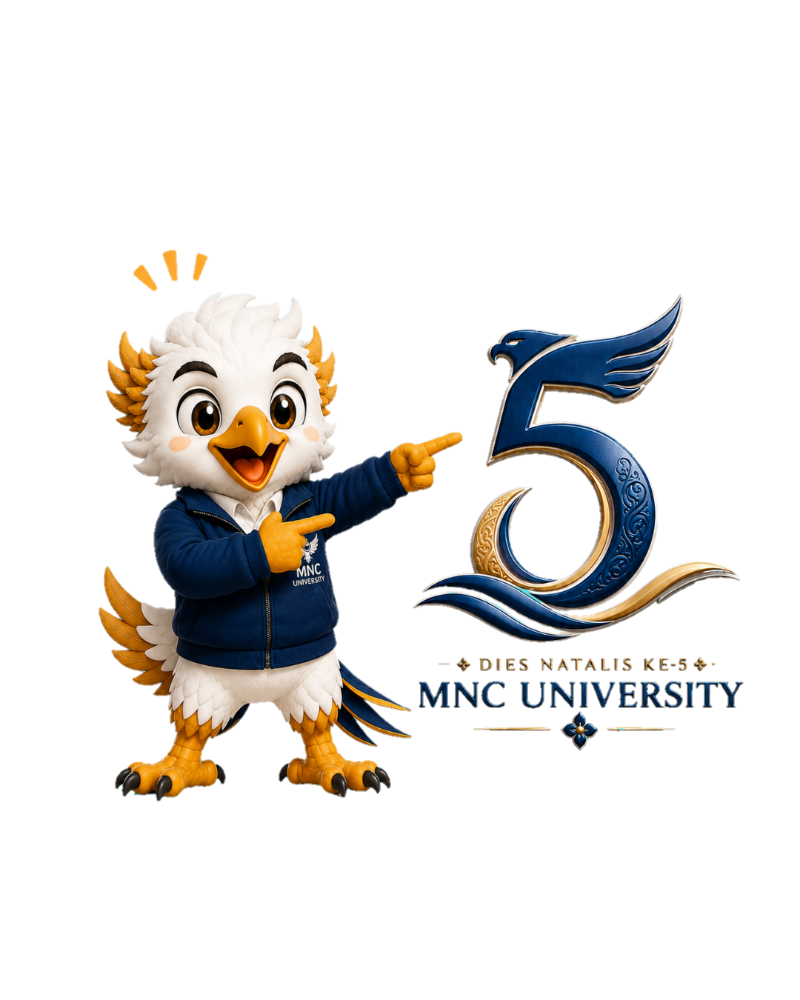
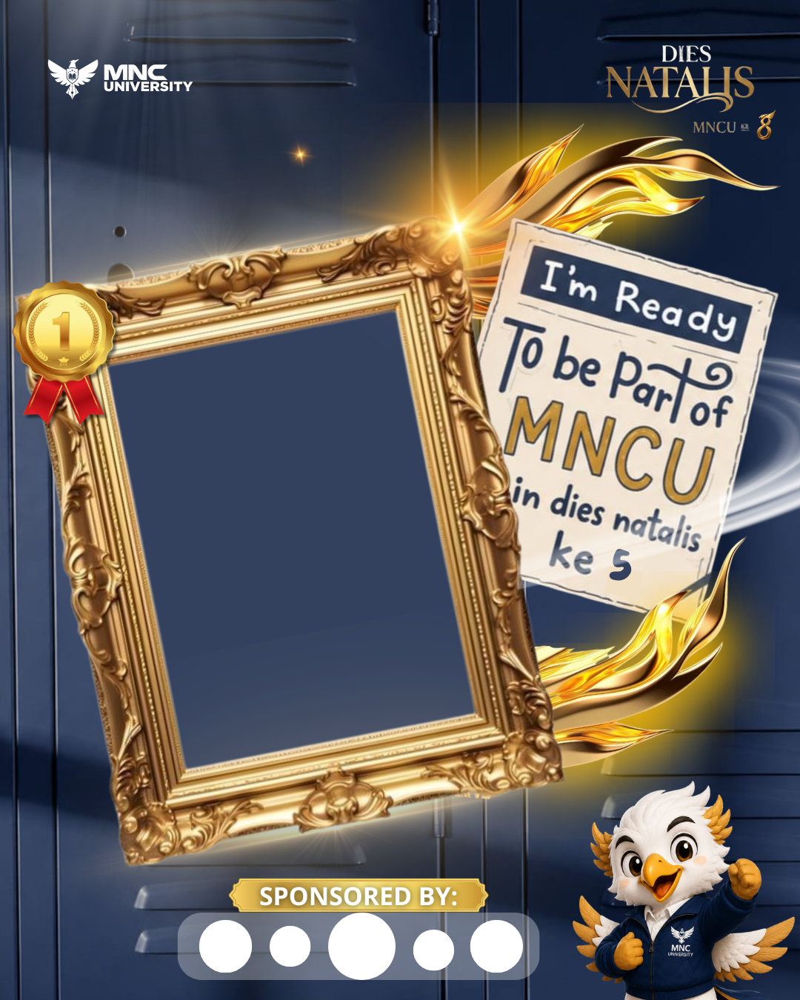
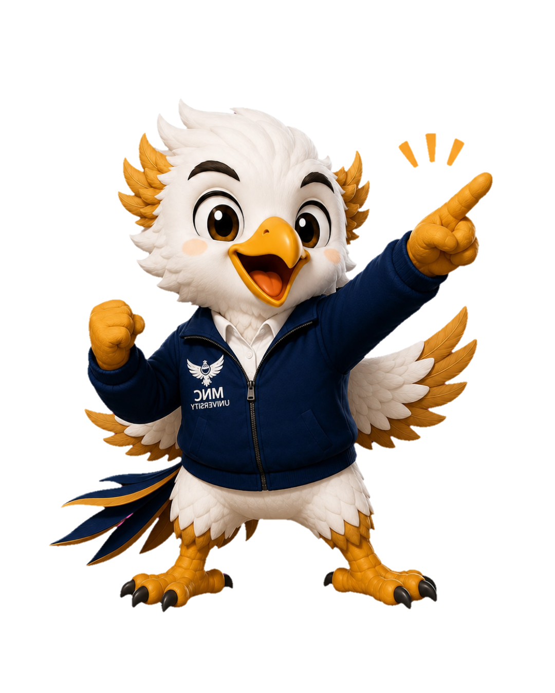

Pengembangan Budaya Indonesia Secara Kreatif Melalui Pendidikan dan Inovasi Generasi Muda

“Pengembangan Budaya Indonesia Secara Kreatif Melalui Pendidikan dan Inovasi Generasi Muda”
ESTRADA Festival — perjalanan MNC University menuju tahun ke-5. Dies Natalis dikemas sebagai festival kampus kreatif yang menggabungkan kompetisi, hiburan, media, dan interaksi mahasiswa — menghadirkan dies natalis berbalut kompetisi antar kelas yang berkelanjutan.
Memperingati Dies Natalis MNC University ke-5.
Mengembangkan kreativitas dan potensi mahasiswa.
Menumbuhkan semangat sportivitas dan kompetisi yang sehat.
Meningkatkan kemampuan komunikasi dan kepercayaan diri mahasiswa.
Menumbuhkan apresiasi terhadap budaya Indonesia melalui kegiatan kreatif.
Mempererat hubungan antar mahasiswa dan menjalin kerja sama dengan sponsor.

Tunjukkan semangatmu sebagai bagian dari keluarga besar MNC University. Gunakan twibbon resmi ESTRADA Festival di media sosialmu dan sebarkan energi positif!
Pasang Twibbon SekarangHabis daftar? Twibbon otomatis tawarkan di halaman sukses.
Briefing teknis seluruh cabang perlombaan.
Kompetisi bakat vokal, kemampuan berbicara publik, dan ketangkasan billiard.
Kompetisi olahraga antar kelas/prodi memperebutkan piala bergengsi.
Turnamen gaming antar mahasiswa tingkat universitas.
Malam puncak perayaan Dies Natalis ke-5 MNC University ESTRADA Festival.

Siapkan tim dan dirimu untuk menjadi juara di ESTRADA Festival Dies Natalis ke-5! Daftar via form terintegrasi Google Sheet.
Form Pendaftaran Lomba